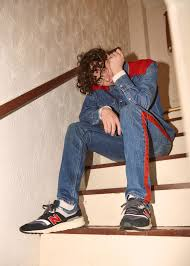
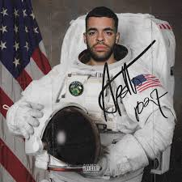

Jack Harlow (born March 13,1998) is an American rapper from Louisville, Kentucky. He released his first studio album in August 2018 titled Loose. He recently released his second project titled Confetti which helped him pick up traction in the big scenes. He recently also signed to DJ Drama's record label and is continuting to make music.
bbno$ is a Canadian rapper born in Vancouver in 1995. His real name is Alexander Gumuchian. He often colaborateswith another underated rapper named yung gravy and they make very good music. Recently, he released a song called lalala which blew up because of an app known as tik tok. Although he is starting to gain trction in the music industry, I still believe that he is underrated and will soon be at the top.
Apollo1027 is a fairly new rapper who is currently bursting into the scenes. His most popular song, designer snakes was featured in a video by the popular youtube channel Nelk Boys and has been blowing up ever since. He recently released an album called 1027, which is also his birthday (October 27th). He is a rapper that you need to start watching out for because he will take the world by storm.
